Vanilla Data
This table represents every vanilla enchantment with a unique identifier. The data is gathered when the Adjustability() constructor is called.
The way the enchantments are gathered is by accessing ForgeRegistries.ENCHANTMENTS.
This way any class which extends from the Enchantment class will be gathered, this means that any modded enchantment will be gathered as well.
Generally the way Minecraft handles data in general is not by assigning a unique identifier to each object as an integer, but by using the ResourceLocation class which is a combination of the mod's ID and the name of the enchantment.
This approach avoids potential conflicts between mods that might occur if they tried to use the same integer ID for different enchantments.
File tree structure
enchantment_data.json
This data is populated when the Adjustability() constructor is called
Note that these are all the Enchantments present in Minecraft 1.20.6 without additional mods
If the json file was formated like the Mathematical Analysis (every Enchantment is an ordered pair of the index and the enchantment name), this is how it would look:
enchantment_data.json Mathematical Analysis
Based off of this representation, one list represents one complete graph of mutually exclusive enchantments:

Based on the Mathematical Analysis, the table in reality isn't quite generated as analysed. The table is generated such that the enchantments are grouped together based on their compatibility with each other in a list.
Reason being is that it is more useful to have the enchantments grouped together based on their compatibility with each other, it is more simple to configure.